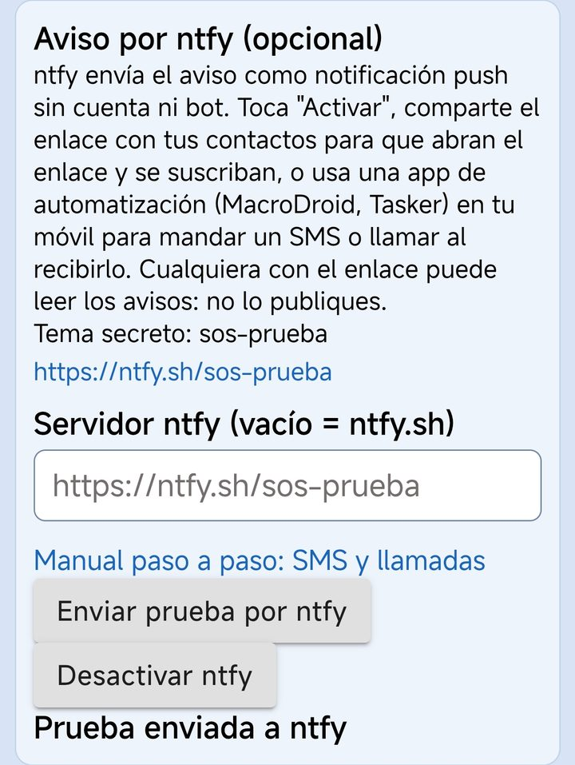
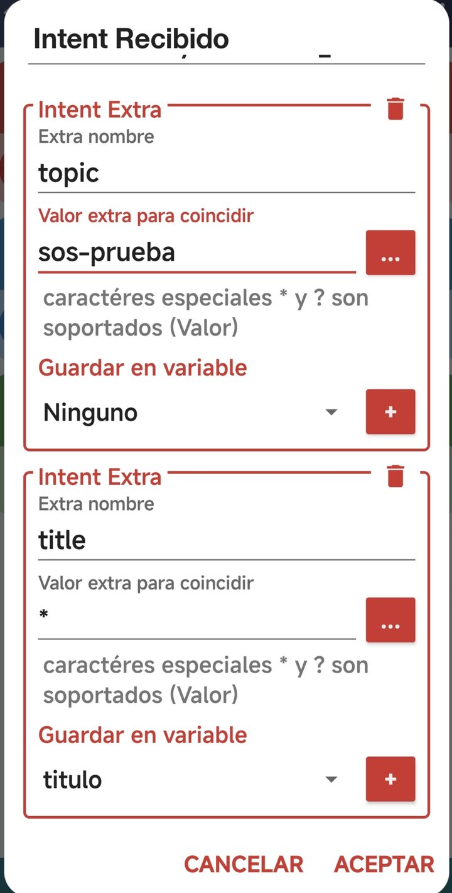
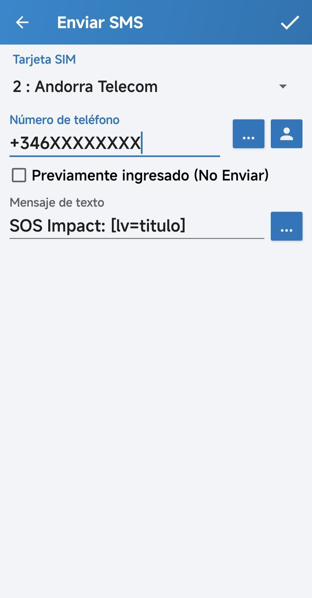

SMS y llamadas automáticos
Qué conseguirás
Cuando el reloj detecte una caída o pulses SOS, tu móvil mandará solo un SMS con una frase y el enlace de tu ubicación (y, si quieres, llamará) a la persona que elijas. El reloj no puede enviar SMS por sí mismo (Zepp OS no lo permite), así que el camino es: reloj → app Zepp del móvil → ntfy (aviso push) → MacroDroid → SMS.
- Activa ntfy en SOS Impact. En la app Zepp abre los ajustes de SOS Impact, busca el cuadro Aviso por ntfy y pulsa Activar ntfy. Aparece un tema secreto con esta forma:
sosimpact-…. Pulsa Enviar prueba por ntfy y comprueba que sale «Prueba enviada». Copia el tema: lo usarás en los pasos 2 y 4. No lo publiques: quien lo conozca puede leer tus avisos.
Ajustes de SOS Impact en la app Zepp: cuadro «Aviso por ntfy» con el tema secreto y el botón «Enviar prueba por ntfy». (Imagen de ejemplo.) - Instala y suscribe la app ntfy. Instala ntfy (Google Play o F-Droid), pulsa + y escribe el tema del paso 1 (servidor ntfy.sh, salvo que uses el tuyo). Debe llegar una notificación al enviar la prueba. Si no llega nada, revisa que el tema está escrito exactamente igual.

Pantalla «Suscribirse al tópico» de ntfy: escribe tu tema (tapado aquí) y pulsa SUSCRIBIR. - Activa los «Mensajes Broadcast» en ntfy. En ntfy: ⋮ → Ajustes → baja hasta Mensajes Broadcast y actívalo. Sin esto ntfy no avisa a MacroDroid.

Ajustes de ntfy: «Mensajes Broadcast» activado. - Crea la macro en MacroDroid: el disparador. Macros → + → Disparadores → Dispositivo/Aplicaciones → Intent recibido. Rellena:
Campo Valor Acción io.heckel.ntfy.MESSAGE_RECEIVEDPaquete (si aparece el campo) io.heckel.ntfyIntent Extra 1 — nombre topicIntent Extra 1 — valor para coincidir solo tu tema, p. ej. sosimpact-abc123(sin «topic=» ni espacios)Intent Extra 2 — nombre titleIntent Extra 2 — valor para coincidir *(cualquier texto). SOS Impact publica en ntfy solo la alerta inicial, así que recibirás un único SMS por caída; los avisos de seguimiento van por Telegram.Intent Extra 2 — guardar en variable pulsa + y crea una variable de texto llamada tituloEl error más común es escribir el nombre del extra con otra palabra o poner
topic=delante del valor: el nombre debe ser exactamentetopic.
Pantalla «Intent Recibido» con los dos extras: topiccon tu tema ytitleguardado en la variabletitulo. En el valor detitleescribe*. Deja sin marcar «Activar la coincidencia de expresiones regulares». (Imagen de ejemplo.) - La acción: enviar el SMS. Acciones → Enviar SMS. Elige el contacto o escribe el número y como texto, solo la variable
[lv=titulo]: ya contiene la frase de alerta y el enlace a tu ubicación (o «Ubicación no disponible»). Insértala con el botón «...» del campo de texto → Variables locales →titulo; escribe los corchetes[ ], no llaves{ }. Puedes añadir tu propia frase delante. Si quieres, añade después otra acción Llamar al mismo número, después del SMS.
Acción «Enviar SMS»: elige la SIM que tenga cobertura (si eliges una «Sin servicio», el SMS falla), escribe el número y como texto tu frase seguida de [lv=titulo]. (Imagen de ejemplo; el número está tapado.)
La macro terminada: disparador «Intent recibido» y debajo las acciones (llamar y SMS). El nombre del contacto está tapado. - Da los permisos. MacroDroid pedirá permiso de SMS y Teléfono: acéptalos. Si instalaste MacroDroid fuera de Google Play y Android bloquea esos permisos, en Ajustes del móvil → Aplicaciones → MacroDroid → ⋮ pulsa Permitir ajustes restringidos.
- Evita que Android cierre las apps. En Ajustes del móvil → Aplicaciones → ntfy y MacroDroid → Batería → Sin restricciones (o «No optimizar»). En algunas marcas (Xiaomi, Huawei, Samsung…) hay además un «inicio automático» o «bloquear en recientes» que conviene activar. En ntfy puedes silenciar el tema para que no suene dos veces (el SMS ya avisa).
- Pruébalo. Primero con el botón Enviar prueba por ntfy de SOS Impact y después con un SOS manual en el reloj. Debe llegar el SMS con el enlace. En MacroDroid, la macro mostrará «Ejecutada hace unos segundos». Avisa antes a tu contacto de que harás una prueba.
Si no funciona
| Síntoma | Qué revisar |
|---|---|
| La macro dice «Ejecutada hace horas» y no cambia | No le llega el aviso: revisa los pasos 3 (Broadcast), 4 (nombre del extra topic, valor sin «topic=», paquete) y que ntfy esté suscrito al tema. |
| Se ejecuta pero no sale el SMS | Permisos de SMS (paso 6), tarjeta SIM con saldo/SMS, número bien escrito. |
| El SMS sale sin enlace | El aviso no llevaba ubicación (el reloj no consiguió GPS, o es la prueba de ntfy, que no lleva ubicación). El SMS sale igualmente con «Ubicación no disponible». |
El SMS muestra el texto {lv=titulo} | Has escrito llaves en vez de corchetes. Bórralo e inserta la variable con el botón «...» (queda como [lv=titulo]). |
| Funciona un rato y luego deja de funcionar | Android duerme las apps: revisa el paso 7 y vuelve a probar. |
| Quiero dejar de usarlo | En SOS Impact pulsa Desactivar ntfy y borra la macro y la suscripción en ntfy. |
| Error «sms sending» al probar la acción | Elige en la acción la SIM que tiene cobertura (no una «Sin servicio»). Prueba con un texto fijo como «prueba»; si funciona, el problema está en el texto de la variable. |
Privacidad
El aviso por ntfy viaja por el servidor ntfy.sh (o el tuyo) con el tema secreto como única «contraseña»: no lo compartas y cámbialo (Desactivar → Activar) si crees que se ha filtrado. El SMS sale de tu propio móvil con tu operador. Para más privacidad puedes usar un servidor ntfy propio (campo Servidor ntfy).